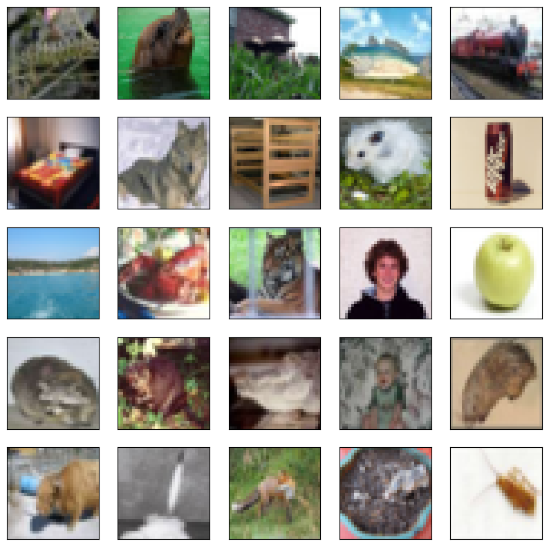
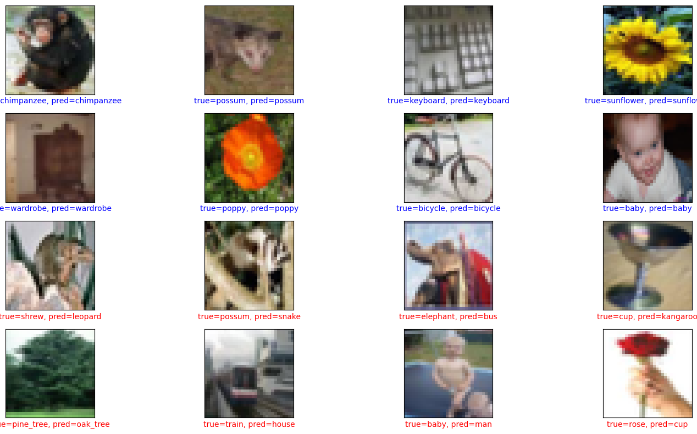
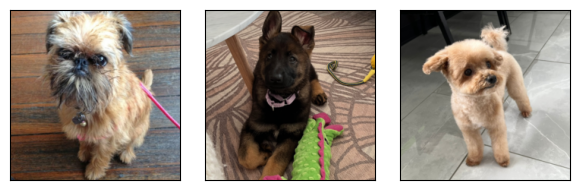

import numpy as np
import matplotlib.pyplot as plt
import torch
import torch.nn as nn
import torch.nn.functional as F
from torch import optim
from torch.utils.data import TensorDataset, DataLoader
import torchvisionLecture 3 - CNNs
Convolutional Neural Networks
This notebook is adapted from ISLP.
First, download CIFAR100 data.
batch_size = 128
(cifar_train,
cifar_test) = [torchvision.datasets.CIFAR100(root="../data",
train=train,
download=True)
for train in [True, False]]
label_names = cifar_test.classes
transform = torchvision.transforms.ToTensor()
cifar_train_X = torch.stack([transform(x) for x in
cifar_train.data])
cifar_test_X = torch.stack([transform(x) for x in
cifar_test.data])
cifar_train = TensorDataset(cifar_train_X,
torch.tensor(cifar_train.targets))
cifar_test = TensorDataset(cifar_test_X,
torch.tensor(cifar_test.targets))
train_loader = DataLoader(cifar_train, batch_size=batch_size)
test_loader = DataLoader(cifar_test, batch_size=1000)fig, axes = plt.subplots(5, 5, figsize=(10,10))
rng = np.random.default_rng(4)
indices = rng.choice(np.arange(len(cifar_train)), 25,
replace=False).reshape((5,5))
for i in range(5):
for j in range(5):
idx = indices[i,j]
axes[i,j].imshow(np.transpose(cifar_train[idx][0],
[1,2,0]),
interpolation=None)
axes[i,j].set_xticks([])
axes[i,j].set_yticks([])
# note that torch requires image tensors to be [N, C, H, W]
# N: samples, C: channels, H: height, W: width
Let’s set up our convolutional neural network for CIFAR100.
class BuildingBlock(nn.Module):
def __init__(self,
in_channels,
out_channels):
super(BuildingBlock, self).__init__()
self.conv = nn.Conv2d(in_channels=in_channels,
out_channels=out_channels,
kernel_size=(3,3),
padding='same')
self.activation = nn.ReLU()
self.pool = nn.MaxPool2d(kernel_size=(2,2))
def forward(self, x):
return self.pool(self.activation(self.conv(x)))
# If the syntax *expression appears in the function call,
# expression must evaluate to an iterable. Elements from
# this iterable are treated as if they were additional
# positional arguments; if there are positional arguments
# x1, ..., xN, and expression evaluates to a sequence y1, ..., yM,
# this is equivalent to a call with M+N positional arguments x1, ..., xN, y1, ..., yM.
class CIFARModel(nn.Module):
def __init__(self):
super(CIFARModel, self).__init__()
sizes = [(3,32),
(32,64),
(64,128),
(128,256)]
self.conv = nn.Sequential(*[BuildingBlock(in_, out_)
for in_, out_ in sizes]) # A single star * unpacks a sequence into positional arguments
self.output = nn.Sequential(nn.Dropout(0.5),
nn.Linear(2*2*256, 512),
nn.ReLU(),
nn.Linear(512, 100),
nn.Softmax())
def forward(self, x):
val = self.conv(x)
val = torch.flatten(val, start_dim=1)
return self.output(val)
def loss_fn(self, y, y_pred):
log_pred = torch.log(y_pred + 1e-8)
loss = -(log_pred * y).sum(1).mean()
return lossLet’s instantiate the CIFAR100 model. Note: training the CIFAR100 model takes awhile (43 minutes)
model = CIFARModel()lr = 0.001
epochs = 50
optimizer = optim.Adam(model.parameters(), lr=lr)# set model to training mode
model.train()
for epoch in range(epochs):
epoch_loss = 0
for x_batch, y_batch in train_loader:
y_pred = model(x_batch)
y_batch = F.one_hot(y_batch, num_classes=100)
loss = model.loss_fn(y_batch, y_pred)
loss.backward()
optimizer.step()
optimizer.zero_grad()
epoch_loss += loss.item()
if epoch % 10 == 0:
print('epoch: ', epoch, 'loss:', f"{epoch_loss:.3}")/Users/gm845/anaconda3/envs/msds534/lib/python3.11/site-packages/torch/nn/modules/container.py:217: UserWarning: Implicit dimension choice for softmax has been deprecated. Change the call to include dim=X as an argument.
input = module(input)epoch: 0 loss: 1.61e+03
epoch: 10 loss: 8.59e+02
epoch: 20 loss: 6.62e+02
epoch: 30 loss: 5.58e+02
epoch: 40 loss: 4.91e+02We save the trained CIFAR100 model so we can access it later.
filename = 'cifar100-model'torch.save(model.state_dict(), filename)Load model:
model.load_state_dict(torch.load(filename))<All keys matched successfully>Let’s calculate the accuracy of the model on a subset of the data.
model.eval()
x_batch, y_batch = next(iter(test_loader))
y_pred_array = model(x_batch)
y_pred = torch.argmax(y_pred_array, axis=1)
acc = (y_pred == y_batch).sum()
acc = acc / len(y_pred)/Users/gm845/anaconda3/envs/msds534/lib/python3.13/site-packages/torch/nn/modules/module.py:1773: UserWarning: Implicit dimension choice for softmax has been deprecated. Change the call to include dim=X as an argument.
return self._call_impl(*args, **kwargs)acctensor(0.4410)A random classifier for 100 classes would get 1%. So not bad… but better models can get up to 90s.
Let’s look at some examples the model got wrong:
correct = torch.where(y_pred == y_batch)[0]
errors = torch.where(y_pred != y_batch)[0]
inds1 = np.random.choice(correct.numpy(), size = 8)
inds2 = np.random.choice(errors.numpy(), size = 8)
inds = np.concatenate((inds1, inds2))
pred_array = y_pred_array.detach().numpy()
num_rows = 4
num_cols = 4
num_images = num_rows * num_cols
plt.figure(figsize=(2 * 2 * num_cols, 2 * num_rows))
for i in range(num_images):
n = inds[i]
plt.subplot(num_rows, num_cols, i + 1)
plt.xticks([])
plt.yticks([])
plt.grid(False)
image, label = x_batch[n], y_batch[n]
label = label_names[label]
plt.imshow(np.transpose(image,
[1, 2, 0]),
interpolation=None)
plt.xlabel(label)
predicted_label = label_names[y_pred[n]]
if predicted_label == label:
color = 'blue'
else:
color = 'red'
plt.xlabel("true={}, pred={}".format(
label,
predicted_label),
color=color)
plt.tight_layout() 
ResNet
The torchvision.models package provides pre-trained models like ResNet-50 (a ResNet model with 50 layers). Here, we get the predictions from ResNet-50 for pictures of the professors’ dogs. (Note: this uses code from ISLP)
from torchvision.models import (resnet50, ResNet50_Weights)
from torchvision.transforms import (Resize,
Normalize,
CenterCrop,
ToTensor)
from torchvision.io import read_image
from glob import glob
import json
import pandas as pdresnet_model = resnet50(weights=ResNet50_Weights.DEFAULT)# We need to normalize the images for use for ResNet-50
resize = Resize((232,232), antialias=True)
crop = CenterCrop(224)
normalize = Normalize([0.485,0.456,0.406],
[0.229,0.224,0.225])
imgfiles = sorted([f for f in glob('dogs/*')])
imgs = torch.stack([torch.div(crop(resize(read_image(f))), 255)
for f in imgfiles])
imgs_no_norm = imgs
imgs = normalize(imgs)
imgs.size()torch.Size([3, 3, 224, 224])plt.figure(figsize=(2 * len(imgfiles), 2))
for i, imgfile in enumerate(imgfiles):
plt.subplot(1, len(imgfiles), i + 1)
plt.xticks([])
plt.yticks([])
plt.grid(False)
plt.imshow(np.transpose(imgs_no_norm[i].numpy(),
[1, 2, 0]),
interpolation=None)
plt.tight_layout() 
resnet_model.eval()ResNet(
(conv1): Conv2d(3, 64, kernel_size=(7, 7), stride=(2, 2), padding=(3, 3), bias=False)
(bn1): BatchNorm2d(64, eps=1e-05, momentum=0.1, affine=True, track_running_stats=True)
(relu): ReLU(inplace=True)
(maxpool): MaxPool2d(kernel_size=3, stride=2, padding=1, dilation=1, ceil_mode=False)
(layer1): Sequential(
(0): Bottleneck(
(conv1): Conv2d(64, 64, kernel_size=(1, 1), stride=(1, 1), bias=False)
(bn1): BatchNorm2d(64, eps=1e-05, momentum=0.1, affine=True, track_running_stats=True)
(conv2): Conv2d(64, 64, kernel_size=(3, 3), stride=(1, 1), padding=(1, 1), bias=False)
(bn2): BatchNorm2d(64, eps=1e-05, momentum=0.1, affine=True, track_running_stats=True)
(conv3): Conv2d(64, 256, kernel_size=(1, 1), stride=(1, 1), bias=False)
(bn3): BatchNorm2d(256, eps=1e-05, momentum=0.1, affine=True, track_running_stats=True)
(relu): ReLU(inplace=True)
(downsample): Sequential(
(0): Conv2d(64, 256, kernel_size=(1, 1), stride=(1, 1), bias=False)
(1): BatchNorm2d(256, eps=1e-05, momentum=0.1, affine=True, track_running_stats=True)
)
)
(1): Bottleneck(
(conv1): Conv2d(256, 64, kernel_size=(1, 1), stride=(1, 1), bias=False)
(bn1): BatchNorm2d(64, eps=1e-05, momentum=0.1, affine=True, track_running_stats=True)
(conv2): Conv2d(64, 64, kernel_size=(3, 3), stride=(1, 1), padding=(1, 1), bias=False)
(bn2): BatchNorm2d(64, eps=1e-05, momentum=0.1, affine=True, track_running_stats=True)
(conv3): Conv2d(64, 256, kernel_size=(1, 1), stride=(1, 1), bias=False)
(bn3): BatchNorm2d(256, eps=1e-05, momentum=0.1, affine=True, track_running_stats=True)
(relu): ReLU(inplace=True)
)
(2): Bottleneck(
(conv1): Conv2d(256, 64, kernel_size=(1, 1), stride=(1, 1), bias=False)
(bn1): BatchNorm2d(64, eps=1e-05, momentum=0.1, affine=True, track_running_stats=True)
(conv2): Conv2d(64, 64, kernel_size=(3, 3), stride=(1, 1), padding=(1, 1), bias=False)
(bn2): BatchNorm2d(64, eps=1e-05, momentum=0.1, affine=True, track_running_stats=True)
(conv3): Conv2d(64, 256, kernel_size=(1, 1), stride=(1, 1), bias=False)
(bn3): BatchNorm2d(256, eps=1e-05, momentum=0.1, affine=True, track_running_stats=True)
(relu): ReLU(inplace=True)
)
)
(layer2): Sequential(
(0): Bottleneck(
(conv1): Conv2d(256, 128, kernel_size=(1, 1), stride=(1, 1), bias=False)
(bn1): BatchNorm2d(128, eps=1e-05, momentum=0.1, affine=True, track_running_stats=True)
(conv2): Conv2d(128, 128, kernel_size=(3, 3), stride=(2, 2), padding=(1, 1), bias=False)
(bn2): BatchNorm2d(128, eps=1e-05, momentum=0.1, affine=True, track_running_stats=True)
(conv3): Conv2d(128, 512, kernel_size=(1, 1), stride=(1, 1), bias=False)
(bn3): BatchNorm2d(512, eps=1e-05, momentum=0.1, affine=True, track_running_stats=True)
(relu): ReLU(inplace=True)
(downsample): Sequential(
(0): Conv2d(256, 512, kernel_size=(1, 1), stride=(2, 2), bias=False)
(1): BatchNorm2d(512, eps=1e-05, momentum=0.1, affine=True, track_running_stats=True)
)
)
(1): Bottleneck(
(conv1): Conv2d(512, 128, kernel_size=(1, 1), stride=(1, 1), bias=False)
(bn1): BatchNorm2d(128, eps=1e-05, momentum=0.1, affine=True, track_running_stats=True)
(conv2): Conv2d(128, 128, kernel_size=(3, 3), stride=(1, 1), padding=(1, 1), bias=False)
(bn2): BatchNorm2d(128, eps=1e-05, momentum=0.1, affine=True, track_running_stats=True)
(conv3): Conv2d(128, 512, kernel_size=(1, 1), stride=(1, 1), bias=False)
(bn3): BatchNorm2d(512, eps=1e-05, momentum=0.1, affine=True, track_running_stats=True)
(relu): ReLU(inplace=True)
)
(2): Bottleneck(
(conv1): Conv2d(512, 128, kernel_size=(1, 1), stride=(1, 1), bias=False)
(bn1): BatchNorm2d(128, eps=1e-05, momentum=0.1, affine=True, track_running_stats=True)
(conv2): Conv2d(128, 128, kernel_size=(3, 3), stride=(1, 1), padding=(1, 1), bias=False)
(bn2): BatchNorm2d(128, eps=1e-05, momentum=0.1, affine=True, track_running_stats=True)
(conv3): Conv2d(128, 512, kernel_size=(1, 1), stride=(1, 1), bias=False)
(bn3): BatchNorm2d(512, eps=1e-05, momentum=0.1, affine=True, track_running_stats=True)
(relu): ReLU(inplace=True)
)
(3): Bottleneck(
(conv1): Conv2d(512, 128, kernel_size=(1, 1), stride=(1, 1), bias=False)
(bn1): BatchNorm2d(128, eps=1e-05, momentum=0.1, affine=True, track_running_stats=True)
(conv2): Conv2d(128, 128, kernel_size=(3, 3), stride=(1, 1), padding=(1, 1), bias=False)
(bn2): BatchNorm2d(128, eps=1e-05, momentum=0.1, affine=True, track_running_stats=True)
(conv3): Conv2d(128, 512, kernel_size=(1, 1), stride=(1, 1), bias=False)
(bn3): BatchNorm2d(512, eps=1e-05, momentum=0.1, affine=True, track_running_stats=True)
(relu): ReLU(inplace=True)
)
)
(layer3): Sequential(
(0): Bottleneck(
(conv1): Conv2d(512, 256, kernel_size=(1, 1), stride=(1, 1), bias=False)
(bn1): BatchNorm2d(256, eps=1e-05, momentum=0.1, affine=True, track_running_stats=True)
(conv2): Conv2d(256, 256, kernel_size=(3, 3), stride=(2, 2), padding=(1, 1), bias=False)
(bn2): BatchNorm2d(256, eps=1e-05, momentum=0.1, affine=True, track_running_stats=True)
(conv3): Conv2d(256, 1024, kernel_size=(1, 1), stride=(1, 1), bias=False)
(bn3): BatchNorm2d(1024, eps=1e-05, momentum=0.1, affine=True, track_running_stats=True)
(relu): ReLU(inplace=True)
(downsample): Sequential(
(0): Conv2d(512, 1024, kernel_size=(1, 1), stride=(2, 2), bias=False)
(1): BatchNorm2d(1024, eps=1e-05, momentum=0.1, affine=True, track_running_stats=True)
)
)
(1): Bottleneck(
(conv1): Conv2d(1024, 256, kernel_size=(1, 1), stride=(1, 1), bias=False)
(bn1): BatchNorm2d(256, eps=1e-05, momentum=0.1, affine=True, track_running_stats=True)
(conv2): Conv2d(256, 256, kernel_size=(3, 3), stride=(1, 1), padding=(1, 1), bias=False)
(bn2): BatchNorm2d(256, eps=1e-05, momentum=0.1, affine=True, track_running_stats=True)
(conv3): Conv2d(256, 1024, kernel_size=(1, 1), stride=(1, 1), bias=False)
(bn3): BatchNorm2d(1024, eps=1e-05, momentum=0.1, affine=True, track_running_stats=True)
(relu): ReLU(inplace=True)
)
(2): Bottleneck(
(conv1): Conv2d(1024, 256, kernel_size=(1, 1), stride=(1, 1), bias=False)
(bn1): BatchNorm2d(256, eps=1e-05, momentum=0.1, affine=True, track_running_stats=True)
(conv2): Conv2d(256, 256, kernel_size=(3, 3), stride=(1, 1), padding=(1, 1), bias=False)
(bn2): BatchNorm2d(256, eps=1e-05, momentum=0.1, affine=True, track_running_stats=True)
(conv3): Conv2d(256, 1024, kernel_size=(1, 1), stride=(1, 1), bias=False)
(bn3): BatchNorm2d(1024, eps=1e-05, momentum=0.1, affine=True, track_running_stats=True)
(relu): ReLU(inplace=True)
)
(3): Bottleneck(
(conv1): Conv2d(1024, 256, kernel_size=(1, 1), stride=(1, 1), bias=False)
(bn1): BatchNorm2d(256, eps=1e-05, momentum=0.1, affine=True, track_running_stats=True)
(conv2): Conv2d(256, 256, kernel_size=(3, 3), stride=(1, 1), padding=(1, 1), bias=False)
(bn2): BatchNorm2d(256, eps=1e-05, momentum=0.1, affine=True, track_running_stats=True)
(conv3): Conv2d(256, 1024, kernel_size=(1, 1), stride=(1, 1), bias=False)
(bn3): BatchNorm2d(1024, eps=1e-05, momentum=0.1, affine=True, track_running_stats=True)
(relu): ReLU(inplace=True)
)
(4): Bottleneck(
(conv1): Conv2d(1024, 256, kernel_size=(1, 1), stride=(1, 1), bias=False)
(bn1): BatchNorm2d(256, eps=1e-05, momentum=0.1, affine=True, track_running_stats=True)
(conv2): Conv2d(256, 256, kernel_size=(3, 3), stride=(1, 1), padding=(1, 1), bias=False)
(bn2): BatchNorm2d(256, eps=1e-05, momentum=0.1, affine=True, track_running_stats=True)
(conv3): Conv2d(256, 1024, kernel_size=(1, 1), stride=(1, 1), bias=False)
(bn3): BatchNorm2d(1024, eps=1e-05, momentum=0.1, affine=True, track_running_stats=True)
(relu): ReLU(inplace=True)
)
(5): Bottleneck(
(conv1): Conv2d(1024, 256, kernel_size=(1, 1), stride=(1, 1), bias=False)
(bn1): BatchNorm2d(256, eps=1e-05, momentum=0.1, affine=True, track_running_stats=True)
(conv2): Conv2d(256, 256, kernel_size=(3, 3), stride=(1, 1), padding=(1, 1), bias=False)
(bn2): BatchNorm2d(256, eps=1e-05, momentum=0.1, affine=True, track_running_stats=True)
(conv3): Conv2d(256, 1024, kernel_size=(1, 1), stride=(1, 1), bias=False)
(bn3): BatchNorm2d(1024, eps=1e-05, momentum=0.1, affine=True, track_running_stats=True)
(relu): ReLU(inplace=True)
)
)
(layer4): Sequential(
(0): Bottleneck(
(conv1): Conv2d(1024, 512, kernel_size=(1, 1), stride=(1, 1), bias=False)
(bn1): BatchNorm2d(512, eps=1e-05, momentum=0.1, affine=True, track_running_stats=True)
(conv2): Conv2d(512, 512, kernel_size=(3, 3), stride=(2, 2), padding=(1, 1), bias=False)
(bn2): BatchNorm2d(512, eps=1e-05, momentum=0.1, affine=True, track_running_stats=True)
(conv3): Conv2d(512, 2048, kernel_size=(1, 1), stride=(1, 1), bias=False)
(bn3): BatchNorm2d(2048, eps=1e-05, momentum=0.1, affine=True, track_running_stats=True)
(relu): ReLU(inplace=True)
(downsample): Sequential(
(0): Conv2d(1024, 2048, kernel_size=(1, 1), stride=(2, 2), bias=False)
(1): BatchNorm2d(2048, eps=1e-05, momentum=0.1, affine=True, track_running_stats=True)
)
)
(1): Bottleneck(
(conv1): Conv2d(2048, 512, kernel_size=(1, 1), stride=(1, 1), bias=False)
(bn1): BatchNorm2d(512, eps=1e-05, momentum=0.1, affine=True, track_running_stats=True)
(conv2): Conv2d(512, 512, kernel_size=(3, 3), stride=(1, 1), padding=(1, 1), bias=False)
(bn2): BatchNorm2d(512, eps=1e-05, momentum=0.1, affine=True, track_running_stats=True)
(conv3): Conv2d(512, 2048, kernel_size=(1, 1), stride=(1, 1), bias=False)
(bn3): BatchNorm2d(2048, eps=1e-05, momentum=0.1, affine=True, track_running_stats=True)
(relu): ReLU(inplace=True)
)
(2): Bottleneck(
(conv1): Conv2d(2048, 512, kernel_size=(1, 1), stride=(1, 1), bias=False)
(bn1): BatchNorm2d(512, eps=1e-05, momentum=0.1, affine=True, track_running_stats=True)
(conv2): Conv2d(512, 512, kernel_size=(3, 3), stride=(1, 1), padding=(1, 1), bias=False)
(bn2): BatchNorm2d(512, eps=1e-05, momentum=0.1, affine=True, track_running_stats=True)
(conv3): Conv2d(512, 2048, kernel_size=(1, 1), stride=(1, 1), bias=False)
(bn3): BatchNorm2d(2048, eps=1e-05, momentum=0.1, affine=True, track_running_stats=True)
(relu): ReLU(inplace=True)
)
)
(avgpool): AdaptiveAvgPool2d(output_size=(1, 1))
(fc): Linear(in_features=2048, out_features=1000, bias=True)
)img_preds = resnet_model(imgs)img_preds.shapetorch.Size([3, 1000])# apply softmax to the outputs of the ResNet
img_probs = np.exp(np.asarray(img_preds.detach()))
img_probs /= img_probs.sum(1)[:,None]# get class labels -- this is available at https://s3.amazonaws.com/deep-learning-models/image-models/imagenet_class_index.json
labs = json.load(open('imagenet_class_index.json'))
class_labels = pd.DataFrame([(int(k), v[1]) for k, v in
labs.items()],
columns=['idx', 'label'])
class_labels = class_labels.set_index('idx')
class_labels = class_labels.sort_index()for i, imgfile in enumerate(imgfiles):
img_df = class_labels.copy()
img_df['prob'] = img_probs[i]
img_df = img_df.sort_values(by='prob', ascending=False)[:3]
print(f'Image: {imgfile}')
print(img_df.reset_index().drop(columns=['idx']))Image: dogs/bonnie.JPG
label prob
0 Brabancon_griffon 0.243078
1 affenpinscher 0.013340
2 Pekinese 0.004563
Image: dogs/maya.jpeg
label prob
0 malinois 0.221570
1 German_shepherd 0.102747
2 Norwegian_elkhound 0.007779
Image: dogs/milo.jpeg
label prob
0 toy_poodle 0.302865
1 miniature_poodle 0.133538
2 Shih-Tzu 0.024314